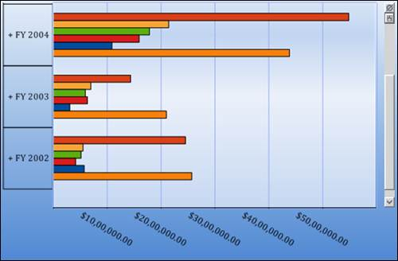
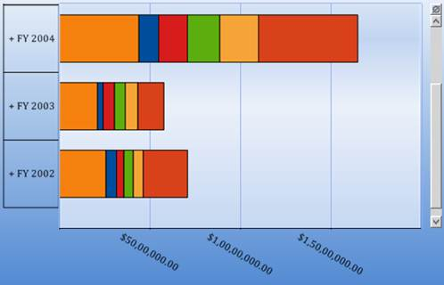
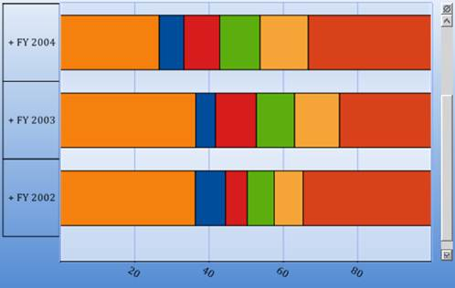

BAR CHART:
The Bar Chart is the simplest and most versatile of statistical diagrams. It displays horizontal bars for each point in the series and points from adjacent series are drawn as bars next to each other. Bar charts can be used to compare values across categories, for displaying the variations in the value of an item over time or for comparing the values of several items at a single point in time.
|
[C#]
this.olapChart1.ChartSeriesType = ChartSeriesType.Bar; |
|
[VB]
Me.olapChart1.ChartSeriesType = ChartSeriesType.Bar |

.
Figure 24: Bar Chart
STACKING BAR CHART:
Stacking Bar chart is a regular bar chart with the x values stacked on top of each other in the specified series order.
|
[C#]
this.olapChart1.ChartSeriesType = ChartSeriesType.StackingBar; |
|
[VB]
Me.olapChart1.ChartSeriesType = ChartSeriesType.StackingBar |

Figure 25: Stacking Bar Chart
STACKING BAR 100 CHARTS:
The Stacked Bar 100 Chart type displays multiple series of data as stacked bars ensuring that the cumulative proportion of each stacked element always totals to 100 percent. The x-axis will therefore always be rendered with the range 0 - 100.
|
[C#]
this.olapChart1.ChartSeriesType = ChartSeriesType.StackingBar100; |
|
[VB]
Me.olapChart1.ChartSeriesType = ChartSeriesType.StackingBar100 |

Figure 26: Stacking Bar 100 Chart
Table 6: ChartSeriesType
|
Property |
Descriptions |
Type |
Data type |
Reference Link |
|
ChartSeriesType |
Different types of charts such as line, area, bar, column and pie chart are implemented using this property. |
Server side |
ChartSeriesType |
- |
Sample Link
A sample demo is available at the following location:
..\Syncfusion\EssentialStudio\<Version Number>\BI\Web\OlapChart.Web\Samples\3.5\Chart Types\Bar Chart\